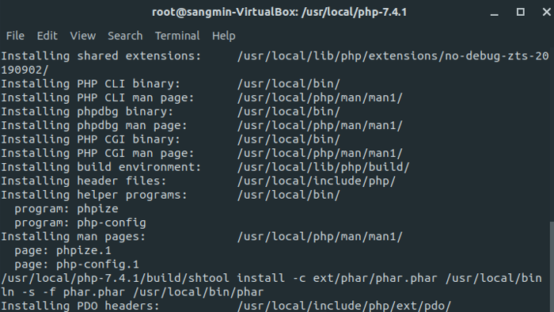
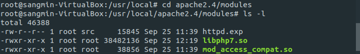
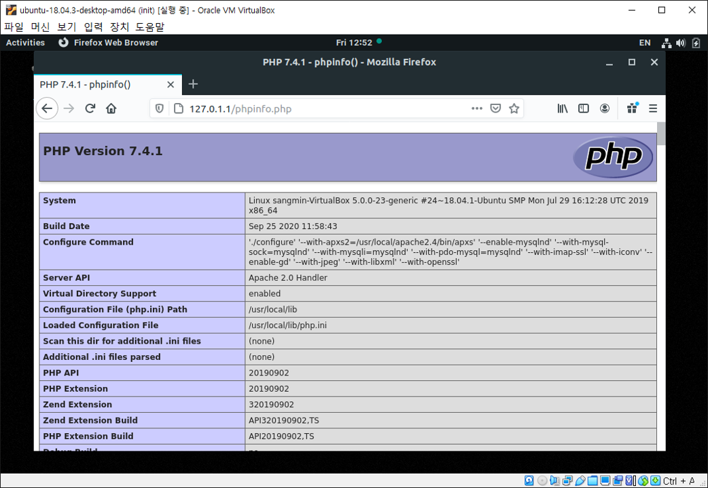

PHP 7.4.1 컴파일 설치
현재 Ubuntu 18.04위에 Apache 2.4.46과 MySQL 8.0.19까지 컴파일 설치했다. PHP 버전 7.4.1 설치를 마지막으로 우분투 위에 패키지 매니저를 사용하지 않고 APM 컴파일 설치를 완료했다.
의존성 패키지 설치
의존성 패키지까지 모두 컴파일 설치 할 수는 없으니 편하게 apt-get 명령어를 사용해준다.
$ apt-get install libxml2-dev
$ apt-get install libjpeg-dev
$ apt-get install libpng-dev
php 설치
Apache와 MySQL 설치할 때와 동일하게 tar.gz 파일을 다운 받아 압축 해제한다.
$ cd /usr/local/
$ wget https://www.php.net/distributions/php-7.4.1.tar.gz
$ tar xvfz php-7.4.1.tar.gz
configure & make
$ cd php-7.4.1
$ ./configure \
--with-apxs2=/usr/local/apache2.4/bin/apxs \
--enable-mysqlnd \
--with-mysql-sock=mysqlnd \
--with-mysqli=mysqlnd \
--with-pdo-mysql=mysqlnd \
--with-imap-ssl \
--with-iconv \
--enable-gd \
--with-jpeg \
--with-libxml \
--with-openssl
$ make && make test && make install
make-install까지 완료하면 다음과 같은 화면이 출력된다.

libphp7.so 파일 확인
Apache 공식 문서를 보면 Apache가 DSO (Dynamic Shared Object) 동적 공유 객체 방식으로 설치되어 있어 아파치를 컴파일한 상태에서 새로운 모듈이 추가될 때 다시 컴파일하지 않아도 된다고 명시되어 있다. 즉 httpd에 기능이 포함되는 것이 아니라 외부에 기능을 두고 필요할 때마다 동적으로 호출해서 사용하는 방식이다. PHP는 대부분 DSO 방식을 사용한다.
$ cd /usr/local/apache2.4/modules
$ ls -l
# libphp7.so 파일 확인

Apache와 PHP 연동
아파치 설정 파일인 httpd.conf 파일을 열어 PHP 모듈이 설치되어 있는지 확인한다.
$ cd /usr/local/apache2.4/conf
$ vi httpd.conf
...
LoadModule php7_module modules/libphp7.so
...
모듈이 잘 설치되어 있다면 mime_module에 아래 내용을 AddType 해준다.
$ vi httpd.conf
...
<IfModule mime_module>
...
AddType application/x-httpd-php .php .html
...
php.ini 파일 세팅
- php.ini : PHP의 설정 파일
php-7.4.1디렉토리로 가면php.ini-development와php.ini-production두 개의 파일이 있다.
전자는 개발용, 후자는 프로덕션 시스템용 버전으로 개발용 같은 경우 더 많은 오류와 경고를 표시해주지만 보안상 문제가 생길 수 있으므로 개발 환경에서만 사용해야 한다. production 파일을/usr/local/lib디렉토리에 복사한다.
$ cd /usr/local/php-7.4.1
$ cp php.ini-production /usr/local/lib/php.ini
테스트용 php 파일 작성
$ cd /usr/local/apache2.4/htdocs
$ vi phpinfo.php
<?php
phpinfo();
?>
APM 컴파일 설치를 하면서 코드를 작성하는 부분은 딱 이 순간 뿐이었다.
연결 확인
아파치를 실행시킨 후 http://127.0.1.1/phpinfo.php로 접속하여 PHP 설치 정보가 출력되면 성공적으로 연동된 것이다. ps -ef | grep httpd 명령어로 아파치가 정상적으로 실행 중인지도 확인한다.
$ sudo /usr/local/apache2.4/bin/httpd -k start
$ ps -ef | grep httpd | grep -v grep
$ sudo netstat -anp | grep httpd
$ sudo curl http://127.0.1.1

설치를 마치며
여차저차 Ubuntu에 서버를 구축하는 과제를 마무리했다. 리눅스를 오랜만에 사용해 기본적인 명령어조차 기억나지 않아 당황스러웠다. 그래도 과제를 하며 다시 복기할 수 있었고, 다양한 명령어를 접할 수 있었다. 서버반 수업을 듣는 이상 리눅스 사용은 불가피할테니 틈틈이 손에 익혀야겠다.